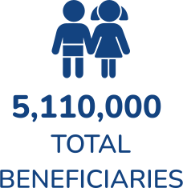
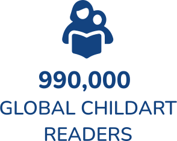
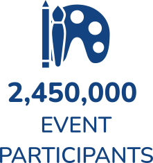

Impact
We are building a more peaceful, prosperous, and sustainable future.

Children’s creative and empathic development fulfills the six most critical UN Social Development
Goals
(SDGs):
REDUCE
POVERTY
POVERTY
.svg)
PROMOTE
GOOD HEALTH
GOOD HEALTH
.svg)
BRING
QUALITY
EDUCATION
QUALITY
EDUCATION
.svg)
ENSURE
GENDER
EQUALITY
GENDER
EQUALITY
.svg)
REDUCE
INEQUITIES
INEQUITIES
.svg)
BUILD PEACE IN
COMMUNITIES &
THE WORLD
COMMUNITIES &
THE WORLD
Since 1997, ICAF has made the world a better place for its children.
- ICAF boosts their self-esteem by exhibiting their creative expressions as the world leader in children’s art exhibitions.
- ICAF develops bonds of understanding and friendship by bringing together the world’s children at the World Children’s Festival.
- ICAF empowers children through the institution of the World Children’s Award.
- ICAF engages them in global art programs such as the Arts Olympiad and the UN Human Security for All campaign.

Measurable Impact
In terms of numbers, more than five million children have befitted from the ICAF,
producing original works under the Arts Olympiad and other ICAF programs. An estimated 2,500,000
individuals have participated in or attended ICAFs festivals and exhibitions that have taken place in
over a dozen major cities worldwide. This number includes the audiences who have attended ICAF’s
special
events such as conferences and symposia. Nearly one million children, parents, teachers and librarians
comprise the total readership since 1998 of ICAF’s ChildArt magazine, published on a quarterly
basis. On
a daily basis, a few thousand children worldwide learn about the ICAF from their peers or online,
gaining confidence in themselves as creators (not merely pupils or consumers, recognizing that their
imagination is seedbed for discovery and innovation, and telling themselves that their art is the most
honest and purest form of human creative expression.
Global Programs and Events (1997-2022)




Sociocultural Impact
ICAF is changing the world for the children by seeding their imagination,
boosting
their
self-esteem, and giving them a voice through innovative initiatives such as:

CHILD ART EXHIBITIONS
ICAF is the world leader in curating exhibitions of children’s art. Children
are
adept at
encapsulating their imagination in a work of art. Their brushstrokes can create a realm independent of
the
adult world. Their perspective is pure and honest. Their creative expressions can familiarize you with
the
nascent imagination that will shape the future.
Unveiling Children’s Imagination
1998-2021
CHILDREN’S PANELS AT MAJOR CONFERENCES
The ICAF has developed unique expertise in conducting an international search
for
talented
panelists, training them, and moderating international panels on critical issues that pertain to the
future,
which rightly belong to the young.
Video: Global Economic Forum, Riyadh
Video: World Cultural Economic Forum, New Orleans
WORLD CHILDREN’S AWARD
In 2007, ICAF instituted the first-ever award that the world’s children
present
to
their
favorite business and cultural leaders. Previous recipients were LEGO, the Swatch Group, and the W. K.
Kellogg Foundation of Awards designed by Karim Rashid, Sergey Eylanbekov, and Tiffany & Company.

2015 World Children’s Award

2011 World Children’s Award
History of Achievements
2022
1998